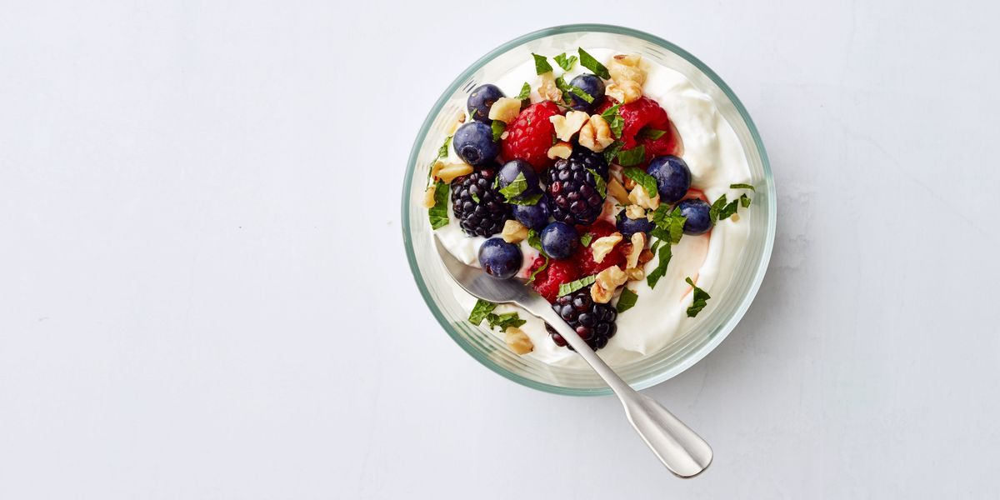

Berry Yogurt Bowl

Description
Fill up before you start your day with a bowl of this berry yogurt. If you're looking to spice things up, swap the berries for apple or pear slices.
Ingredients
- 3/4 c. plain 2% Greek yogurt
- 1 tbsp. Chopped mint
- 2 1/2 tbsp. chopped walnuts
- 1/2 c. Citrus and Mint Berries
Directions
- Spoon the yogurt into a bowl. Top with Citrus and Mint Berries, mint and walnuts.
- Eat fresh or keep chilled.